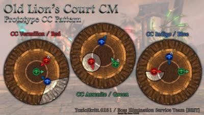
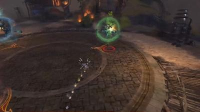
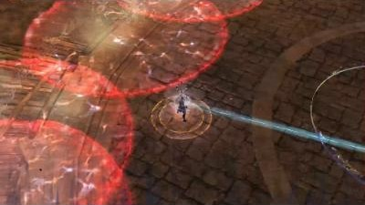
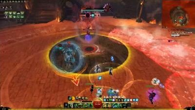

P1 · 100–60 %je 1 Watchknight · Puddles an den Rand
PuzzleReihenfolge zufällig
P2 · 60–20 %2 Bosse aktiv · härteste Phase
Puzzleletzte Bar per Ausschluss
P3 · 20–0 %Bosse getrennt halten
1
Puzzle: Danger Zones nur kurz sichtbar – merken!
Falsche Bar brechen = Wipe. Rot (Vermilion) ist der Anker, er erscheint zuerst. Grün und Blau decken Rots Safe Zone ganz → Rot brechen · Grün halbiert Rots Zone → Blau brechen · Grün deckt Rot ganz, Blau nicht → Grün brechen. Jeder Boss muss bis zum Ende 1× gebrochen werden.
2
Empowered: +5 % Schaden je Stack
Gibt es für Fehler bei großen AoEs: jede getroffene Welle von Vermilions Dual Horizon · jeder Spieler in Arsenites roter AoE · jeder Spieler im roten Außenring von Indigo.
3
Puddles: größer & bleiben liegen
Boiling Aether verschwindet erst beim Phasenwechsel. Am Rand ablegen und übereinander stapeln, sonst fehlt später der Platz.
4
Nie eine Puddle in die Mitte
Indigo ist in der Mitte verwurzelt – eine Puddle dort sperrt alle Nahkämpfer aus.
5
CC-Regel für die Danger Zones
Vermilion immer umdrehen. Grün und Blau nur bei Downs oder im Notfall – sonst geraten Pull und Push durcheinander.
6
P2: Tanks & Abstand
Vermilion am Rand (Puddles), Arsenite eher in der Mitte. Bei Indigo + Vermilion tankt ein zäher Spieler Vermilion am Rand der braunen Tether-Reichweite – nicht ganz außen. Bosse getrennt halten (Power Transfer). Heiler behalten die Fixates im Blick.

① Puzzle-Lösung nach Position

① Drop-In: Zonen blitzen nur kurz

③ Puddles übereinander stapeln⑤ Vermilions Zone umdrehen
Details zum Nachschlagen
Puzzle-Phasen
Lösung über die Positionen der Bosse
Im CM startet der Kampf mit einem Puzzle; die Reihenfolge der Puzzles ist zufällig.
Bar brechen macht die anderen zwei Watchknights unangreifbar – falsche Wahl = Wipe.
Alternative über Positionen: steht ein Watchknight in der Mitte → Rot brechen · gleichseitiges Dreieck um die Mitte (Rot schaut nach außen) → Grün brechen · sonst Blau.
Bars sind im CM größer – zum Üben der Safe Zones braucht man 1–2 Helfer.
DPS-Phasen
P1: jeder Watchknight einzeln
Reihenfolge bleibt: Vermilion → Arsenite → Indigo; nicht aktive Bosse haben Ley-Woven Shielding.
P1 entspricht der NM-Phase 2. Vermilion an den Rand ziehen und für jede Puddle ein Stück weiter.
Erreicht ein Boss eine HP-Schwelle, verschwinden aktive Danger Zones.
P2 (60–20 %):
Vermilion + Arsenite: alle außer Arsenites Fixate auf Vermilion. Kommt die Disc, zieht Vermilions Fixate den Boss leicht vor, der Disc-Spieler bleibt zum Ablegen stehen.
Arsenite + Indigo: Indigo ist in der Mitte verwurzelt – Arsenite am Rand bewegen. Tri-Bolt trifft oft 3 Spieler; mit Tether die Puddle hinter der Gruppe ablegen.
Indigo + Vermilion: lieber eine Puddle etwas näher zur Mitte setzen als down gehen und einen neuen Fixate erzwingen.
P3 (20–0 %): wie Anfang von P2, aber ohne Danger Zones – keine Puddle auf Indigo.
Puddles stapeln & CC
Puddle in eine vorhandene legen

CC auf Vermilion schafft Platz
Indigo-Puddle (nach dem Spread): du wirst nach dem Ablegen weggeteleportiert – direkt in die alte Puddle stellen.
Arsenites Disc: volle Ausdauer, kurz vor dem Treffer doppelt in die Puddle und wieder raus dodgen. Blink & Co. gehen auch.
Vermilions und Indigos Zonen decken fast die ganze Arena; umgedrehtes Vermilion verhindert, dass Pull und Push in P2 gleichzeitig kommen.
Bei Indigos Zone schnell in die kleine Safe Zone – Dual Horizon darf nicht in der Zone auslösen.
Arsenites Zone deckt nur die halbe Arena – Umdrehen hilft kaum, außer Downs liegen drin.
Klassen & Rollen
Daten: GW2 Wingman, Challenge Mode, „Balance Patch November 2026“, Stand 24.11.2026 · Old Lion’s Court: Erfolgsquote 63,2 %, Median-Kill 6:52 min · Ø-DPS nur Specs mit ≥ 0,5 % Anteil
Am häufigsten gespielt (CM)
Spec
Anteil
Mechanist
19,9 %
Virtuoso
14,8 %
Troubadour
9,0 %
Scourge
8,2 %
Firebrand
4,4 %
Harbinger
4,2 %
Tempest
4,1 %
Chronomancer
3,9 %
Ritualist
3,7 %
Specter
3,0 %
Höchster Ø-DPS (CM)
Spec
Ø DPS
Top
Galeshot
22.160
27.743
Vindicator
21.197
24.837
Willbender
20.242
23.832
Mechanist
19.820
25.674
Harbinger
19.516
23.903
Virtuoso
19.439
26.178
Soulbeast
19.319
24.585
Amalgam
18.353
26.012
Evoker
18.333
25.088
Weaver
17.857
21.953
Rollen-Empfehlung (abgeleitet aus Beliebtheit + Ø-DPS)
Rolle
Specs
Warum
DPS sicher & beliebt
Mechanist, Virtuoso, Harbinger, Tempest
Am häufigsten in den CM-Logs – bewährt für diese Mechaniken.
Große Spanne zwischen Ø und Top-DPS → als Support und als (Boon-)DPS gespielt.
Heal-Support
Troubadour, Paragon, Luminary, Druid
Ø-DPS unter 3,5k → in CM-Logs praktisch nur als Heiler/Support.
Komp-Tipp: Laut Wingman führen Mechanist und Virtuoso deutlich, Troubadour ist der häufigste Heiler. Hardstuck empfiehlt Heal-Tempest oder Heal-Druid für starke Direktheilung und 1–2 zähe Off-Tanks für P2.
Klassentipps – worauf du achten musst
Mechanik-Bezug aus dem Guide; die Klassenhinweise sind allgemeine Spieltipps. Für die neuesten Elite-Specs (z. B. Troubadour, Ritualist, Paragon, Luminary, Conduit, Evoker, Antiquary, Galeshot, Amalgam) gelten v. a. die Klassen-Grundregeln – prüfe die konkreten Skills im aktuellen Build.
Wächter
Firebrand · Luminary · Willbender · Dragonhunter
Firebrand: zweithöchster Top-Wert, als DPS und Heiler gespielt.
Stabi für Pull/Push-Phasen bereithalten.
Aegis gegen Dual-Horizon-Wellen.
Ingenieur
Mechanist · Amalgam · Scrapper · Holosmith
Mechanist: meistgespielt – Mech hält Uptime beim Puddle-Laufen.
Amalgam: hoher Ø-DPS.
Scrapper-Gyros helfen, Puddles sauber zu legen.
Mesmer
Virtuoso · Chronomancer · Troubadour · Mirage
Virtuoso: zweithäufigster Spec – Ranged, gut für Off-Tank-Fixates.
Blink zum Puddle-Stapeln nutzen.
Chrono/Troubadour: CC für Puzzle-Bars mitnehmen.
Elementarmagier
Tempest · Weaver · Catalyst · Evoker
Tempest: Hardstuck-Empfehlung für Heal-Alac.
Evoker: starker Ø-DPS.
Wenig HP → in P2 keine Fixates am Rand ohne Heiler.
Nekromant
Ritualist · Scourge · Reaper · Harbinger
Scourge: beliebt, Barrier gegen Push/Pull-Schaden.